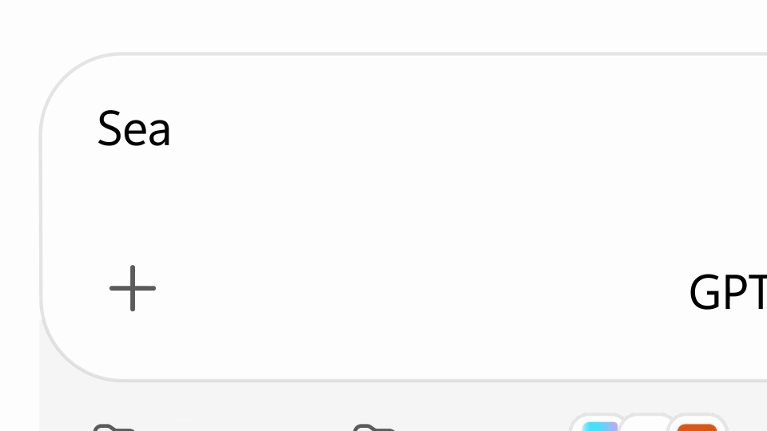
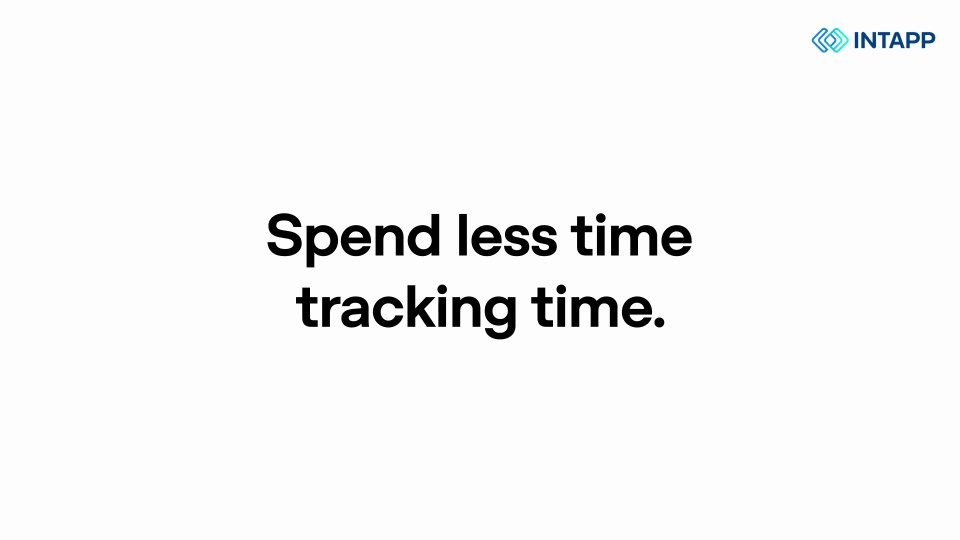
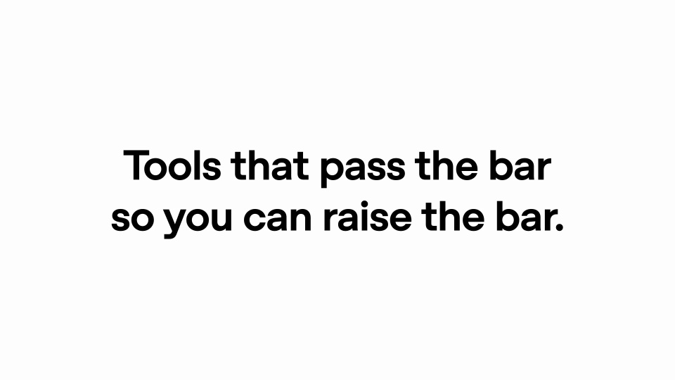

OpenAI / V320
ChatGPT — 73 plugins for legal work
把专业工具的能力放进具体工作环节：提出法律任务，展示操作结果，最后汇成合作工具体系。
构图与编排 可播放 · 可替换内容
整体编排规则示例
查看 HTML 源码
<!doctype html><html lang="zh-CN"><meta charset="utf-8"><meta name="viewport" content="width=device-width,initial-scale=1"><title>ChatGPT — 73 plugins for legal work · sequence</title><style>html,body{margin:0;width:100%;height:100%;overflow:hidden;background:#ffffff}canvas{display:block;width:100%;height:100%;object-fit:contain}</style><body data-mode="sequence"><canvas width="1000" height="600"></canvas><script src="data.js"></script><script src="common.js"></script><script src="scene.js"></script><script src="bridge.js"></script></body></html>画面元素主张标题插件角标请求框文档结果合作伙伴环
MOTION LANGUAGE
动作与构图
局部动作 · 构图规则
01
每个工具都有固定的身份位置
白底配粗无衬线标题，文档和表格保持克制的灰阶。当前工具的标识固定在角落，让不同工作环节仍属于同一套演示。
02
用不同成果承接不同任务
检索用对比表，文档处理用正文和标注，资源查找用结果列表，计时用明确的记录条目。每章先说要完成什么，再展开对应成果。
| 工作环节 | 主要呈现 |
|---|---|
| 检索对照 | 差异明确的表格 |
| 审阅与修改 | 正文、标记和修改落点 |
| 资源查找 | 条目与当前选中项 |
| 时间记录 | 任务和时间成对出现 |
03
伙伴环放在案例之后
伙伴环放在案例之后规则示例
查看 HTML 源码
<!doctype html><html lang="zh-CN"><meta charset="utf-8"><meta name="viewport" content="width=device-width,initial-scale=1"><title>ChatGPT — 73 plugins for legal work · sequence</title><style>html,body{margin:0;width:100%;height:100%;overflow:hidden;background:#ffffff}canvas{display:block;width:100%;height:100%;object-fit:contain}</style><body data-mode="clip" data-start="50" data-end="60"><canvas width="1000" height="600"></canvas><script src="data.js"></script><script src="common.js"></script><script src="scene.js"></script><script src="bridge.js"></script></body></html>把前面出现的工具缩成图标，围绕中心产品形成环形。中心与外围留出距离，图标数量增加时先缩小整体，不让标识相互碰撞。
04
更换行业时更换案例结构
可改成设计、财务或运营工具集合。保留工具身份、具体任务和成果类型的对应，环形落版只总结前面出现过的合作对象。
SEQUENCE
段落与节奏
点击段落，定位到上方编排示意。




画面参考 · 离散静帧
KEEP THE RELATIONSHIPS
制作其他主题
- 换行业时替换插件与对应任务证据，保持章节语法一致。
- 合作伙伴数量可变，但环形中心给主张留空间。
制作约束
主张标题 / 插件角标 / 请求框 / 文档结果 / 合作伙伴环
- 多个插件按主张→操作→证据的重复单元展示；右上角保持当前工具身份。
- 最后插件图标围成环，总结生态覆盖而非单个功能。